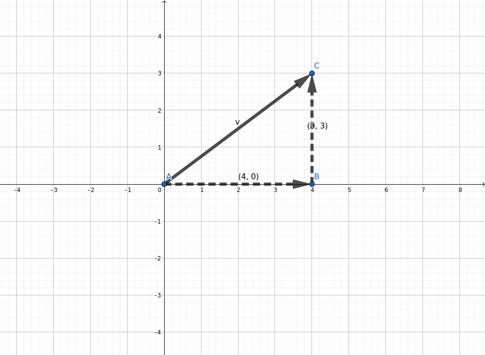
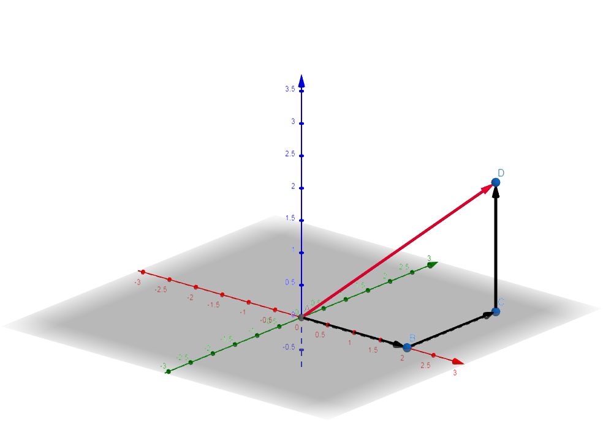

前言
本文讲解向量长度与单位向量的求法，并通过编程实现。
向量长度
向量的两个基本属性是大小与方向，向量长度（英语: Magnitude，也叫向量的模长）便是向量的大小，它是一个标量。
我们可以这样理解，向量长度就是向量起点至终点的距离（两点间的距离）。想要计算向量长度，我们需要用到勾股定理。

图 1: 二维向量的模长
对于二维向量的模长，我们可以很直观地理解。三维向量也是同样的道理。
$$ \lVert \overrightarrow{v} \rVert = \sqrt{ {v_{x}}^{2} + {v_{y}}^{2} + {v_{z}}^{2} } $$
图 2: 三维向量的模长
扩展到N维向量，我们就可以利用公式求向量长度了。
$$ \overrightarrow{v} = \begin{bmatrix} v_{1} \\ v_{2} \\ ... \\ v_{n} \\ \end{bmatrix} $$ $$ \lVert \overrightarrow{v} \rVert = \sqrt{ {v_{1}}^{2} + {v_{2}}^{2} + ... + {v_{n}}^{2} } $$单位向量
方向相同，长度不同的一组向量可以有无穷多个，其中，该方向上长度为1的向量就被称为单位向量。
单位向量被用作度量单位以及指示方向。例如，在三维直角坐标系中，X、Y、Z三个方向的单位向量分别为：
$$
i =
\begin{bmatrix}
1 \\
0 \\
0 \\
\end{bmatrix}
,
j =
\begin{bmatrix}
0 \\
1 \\
0 \\
\end{bmatrix}
,
k =
\begin{bmatrix}
0 \\
0 \\
1 \\
\end{bmatrix}
$$
求一个方向上给定向量的单位向量，被称为正规化（英语: Normalization），单位向量也可以称为正规化向量。
求某方向上给定向量的单位向量，先求出给定向量的模长，再将原向量伸缩变成单位向量。
零向量没有单位向量，这可以理解为零向量不指示任何方向。
向量长度与向量正规化的编程实现
在理解向量长度与向量正规化（求单位向量）之后，我们来考虑它们的编程实现。
根据我们构建的以矩阵表示向量类，向量长度与向量正规化也是非常容易实现的。
# 导入math库以使用sqrt函数
import math
...
# 向量模长(标量)
def magnitude(self):
coordinates_squared = [x**2 for x in self.coordinates]
return math.sqrt(sum(coordinates_squared))
# 向量正规化
def normalized(self):
try:
v_magnitude = self.magnitude()
return self.scalar_mul(1.0/v_magnitude)
except:
print("Something error")
return None
...
向量长度与向量正规化的编程实现（Python）
def vector_magnitude_normalized_test():
v = Vector([3, 4])
w = Vector([2, 2, 2])
print(v.magnitude())
print(v.normalized())
print(w.magnitude())
print(w.normalized())
v = Vector([0, 0])
print(v.normalized())
向量长度与向量正规化的测试代码
参考资料
- 同济高等数学（第7版）下册, P5 - P10